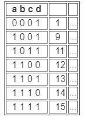
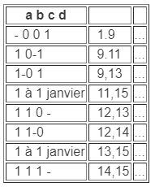
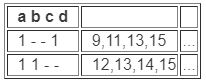
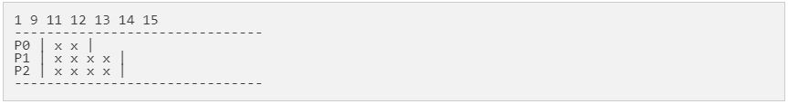
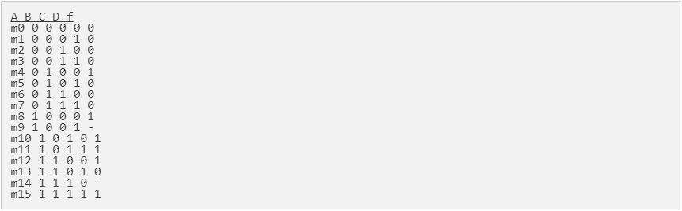
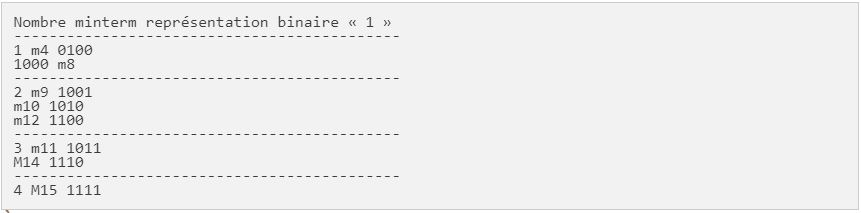
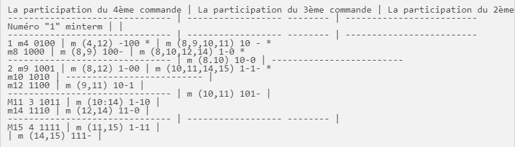
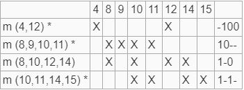
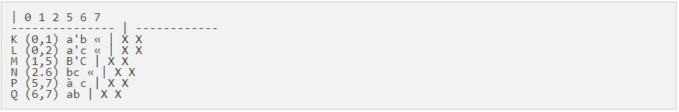

Ce sont les algorithmes utilisés pour développer ce site
Algorithme de
Quine McClusky
Algorithme de
Petrick
Pour plus d'informations, nous vous recommandons vivement de consulter ces algorithmes:
Algorithme de
Quine-McCuluskey
La procédé
Quine-McCluskey (ou
procédé selon la impliquants premiers) est l'algorithme développé par
Willard Van Orman Quine et Edward McCluskey qui est utilisé dans
combinant réseaux en deux niveaux de logique à la minimisation d'une
fonction booléenne n les variables. La méthode est fonctionnellement
identique à la Karnaugh, mais sa forme de tableau rend plus efficace à
apporter à l'ordinateur; en outre, il offre également un moyen
déterministe pour tester la minimisation d'une fonction booléenne.
Le procédé comprend deux étapes:
1- Identifier tous impliquants premiers de la
fonction.
2- Ramenez les impliquants premiers d'une table pour
obtenir la première fonction essentielle impliquante.
COMPLEXITÉ:
Bien qu'il soit plus pratique que les cartes
Karnaugh pour les fonctions avec plus de 4 variables, la méthode
Quine-McCluskey a cependant une gamme limitée d'utilisation, car le
problème que les résout algorithme (la satisfiabilité booléenne) est
NP-dur: Son exécution pousse de façon exponentielle comme le nombre
d'entrées. On peut montrer que pour une fonction n les variables de la
limite supérieure du nombre d'impliquants premiers est 3n/n. si n = 32
il peut y avoir plus de 6,5 * 10^15 impliquants premiers. Par
conséquent, les fonctions avec un grand nombre de variables booléennes
doivent être réduites au minimum par des méthodes heuristiques, tels
que le minimiseur logique Espresso (logique heuristique Espresso
minimiseur).
MÉTHODE:
La méthode consiste en deux phases principales: la
recherche des impliquants premiers et la recherche ultérieure de la
couverture optimale. Considérons la minimisation sous forme de somme
de produits (SOP également connu, d'après le sigle Somme des
produits), Mais le tout est facilement extensible à la forme du
produit des sommes (ou POS, produit des sommes).
Dans la première phase est applique systématiquement
la simplification du type:
à savoir la distributivité du produit par rapport à la somme, où P
indique un produit terme (minterm). De toute évidence, le procédé est
également extensible à des fonctions non complètement spécifiés et
également à des circuits à sorties multiples. La première phase
comprend les étapes consistant à:
1- tous les tableaux minterms de la fonction sous
forme binaire, dans l'ordre croissant en ce qui concerne la table de
vérité.
2- comparer entre eux tous les termes de façon
exhaustive: elle simplifie les termes qui diffèrent par un seul bit
(distance de Hamming de unitaire) et la marque, car ils ont contribué
à la création d'un implicant.
3- puis créer une nouvelle table avec tous les
termes de l'article qui sont délimités à partir de la première table,
puis répéter l'étape 2).
4- le processus se termine lorsque vous ne pouvez
plus faire des réductions.
Au point de la construction de la table, il est
facile de voir que nous ne comparons pas nécessairement tous les
termes entre eux, mais en fait que les termes adjacents qui diffèrent
par un seul bit dans le tableau 1. regrouper ensuite les termes qui
ont un nombre égal de 1 dans le minterm.
exemple
Que ce soit en raison de la fonction suivante:
Étape 1: la première table référençant

Étape 2: Comparaison
Nous voyons de la table que le minterm 1 ne doit
être comparée à la minterm 9, qui a deux 1 dans son produit et non
avec les autres qui diffèrent par deux bits. En comparant les minterm
avec 1 à 9, nous voyons que ne diffèrent que dans le premier bit: la
première ligne de la table suivante doit donc simplifier -001
précisément le premier bit. La comparaison de 1 à 12 ne sont pas
compatibles car les deux minterms diffèrent pas par un seul bit. A
l'inverse 9 compare à 11 et 13, mais pas avec 14 et 12 contre 13 et 14
mais pas avec 11. Enfin, 11, 13, 14 sont confrontés à 15. Le résultat
final est indiqué dans le tableau suivant:

Étape 2: Réduction encore
Bien sûr, nous devons réduire encore aussi longtemps
que vous le pouvez. Dans ce cas, nous ne pouvons comparer avec 9,11
13,15 qui diffèrent pour le second bit et 12,13 avec 14,15 qui ne
diffèrent que dans le troisième bit:

Étape 3: la première sélection impliquant
À ce stade, aucune autre réduction possible.
COUVERTURE:
La deuxième étape concerne les impliquants de choix
optimal. Pour ce faire, nous construisons une table ladite table de
couverture qui consiste en une matrice dans laquelle les indices de
ligne représentant les premiers impliquants identifiés, alors que les
indices des colonnes représentent tous les minterms de la fonction. La
couverture des éléments tableau sont cases marquées 1 si ce qui
implique Il couvre la j-ème minterm, ils sont par ailleurs 0. Sinon,
il vous suffit d'utiliser un « x » pour identifier que celui de la
table.

exemple

Apartir de la table, on peut déduire la forme canonique la fonction
sous la forme de somme de produits (disjonctive) en ajoutant
simplement le minterms avec une sortie « 1 » (mais en omettant ceux
avec une sortie ne se soucient pas "-").
La fonction, bien sûr, ne sont pas en forme minimale. Ainsi, pour
réduire au minimum, sont présentés sur une table tous les minterms
avec sortie « 1 » (incluant également ceux qui ont le ne se soucient
pas en tant que sortie), les trier dans des classes en fonction du
nombre de présents « 1 » dans chaque minterm:

À ce stade, vous pouvez commencer à combiner les minterms ensemble. Si
deux minterms, appartenant à différentes classes, une distance de
Hamming égal à 1 (à savoir diffèrent par une seule variable), alors
ils peuvent être joints, en insérant dans la variable se trouve pas
dans une commune ne se soucient pas. Les minterms qui ne peuvent être
combinés entre eux sont indiqués dans l'exemple d'un astérisque ( « *
»). Une fois épuisé toutes les impliquants du 4ème ordre, il est passé
à la simplification possible de celles du 3e ordre, où dans ce cas
doivent être reliés entre eux avec les minterms Hamming distance égale
à 2. A la fin, nous arrivons à la table suivante:

Étape 2: la première table référençant
Une fois la recherche des impliquants premiers, ceux-ci sont présentés
dans un tableau, l'écriture sur les lignes et les colonnes impliquant
les minterms.

Afin de procéder au choix de la toiture appliquer les critères
suivants:
- Ligne de dominance: la ligne i domine la ligne j
si le sous-entendu Pi couvre toutes les minterms qui couvre le plus Pj
impliquant au moins un.
- Colonne de dominance: La s colonne domine la
colonne j si la mj minterm est couvert par les impliquant qui me a
couvert au moins un plus.
- Choix de l'implicant essentiel : Un sous-entendu
est appelée essentiel si un marquage apparaissant dans une colonne est
recouverte d'une seule ligne. Dans ce cas, comportant l'addition de
toutes les couvertures et vous supprimez la ligne et toutes les
colonnes dans lesquelles il y a un dell'implicante.Nell'esempio
marquant la première sous-entendu est essentiel, car il est le seul à
couvrir minterm 4.Le en va de même pour le second sous-entendu que
couvre la minterm 9 et pour le quatrième sous-entendu que le couvre
minterm 15.
Dans ce cas, le troisième impliquant l'ancien peut être couvert par le
second, le premier et le quatrième, il est donc pas indispensable.
Dans certains cas, des situations surgissent où les cartes cycliques
ne sont pas présentes conditions de domination ni de essentialité, qui
devraient être utilisés pour d'autres procédures de simplification.
Une façon systématique et efficace est représenté par Procédé de
Petrick. Dans cet exemple, la première impliquant coinvologono
essentiel tous minterms, donc il n'y a pas besoin de combiner
l'essentiel avec ceux impliquant non essentiels.
Les équations dérivées sont fonctionnellement
équivalents équation d'origine.
SOURCE:
BookWiki
Algorithme de
Petrick
La procédé de
Petrick est une
résolution de l'algorithme minterms contenue dans une table de ce qui
implique première formée avec le Procédé Quine-McCluskey. Cette
méthode, ce qui simplifie la couverture de transposition sous forme
algébrique, il est peu pratique pour les très grandes tables, car il
évalue toutes les solutions possibles, mais il est facilement
réalisable dans un ordinateur à l'aide d'algorithmes branch and bound.
Le procédé fonctionne en procédant comme suit:
1- Réduction des impliquants premiers de la table en
supprimant les lignes contenant des impliquants premiers essentiels
(et leurs colonnes respectives)
2- Le marquage des lignes de la table réduite (, , ,
, etc.)
3- Construction d'une fonction logique cela est vrai
lorsque toutes les colonnes sont couvertes ( Il est constitué par un
produit de sommes, dans lequel chaque terme de la somme est de la
forme , quand représenter une rangée qui couvre la colonne )
4- Minimisation des en somme de produits en
appliquant l'équivalence (Chaque terme dans le résultat est une
solution, qui est un ensemble de lignes qui couvre tous les minterms
du tableau)
5- Détermination des solutions minimales identifiant
les termes qui contiennent le moins de impliquants premiers
6- Comptez le nombre de littéraux dans chacune
impliquant d'abord des termes trouvés précédemment et la recherche du
nombre total de littéraux
7- La sélection des termes formés par le plus petit
nombre de littéraux et d'écrire les sommes correspondantes des
impliquants premiers.
exemple
Supposons qu'il veut réduire la fonction suivante:
en utilisant la Procédé Quine-McCluskey Vous arrivez à la table
suivante de impliquants premiers:

Sur la base de la coque marquée par un X dans le
tableau ci-dessus, nous pouvons obtenir le produit suivant des sommes
des lignes, où les lignes sont ajoutées et les colonnes multipliées:
Utilisation de la distribution de biens et: équivalences
l'expression précédente est simplifiée et
transformée en une somme de produits comme suit:
En appliquant l'équivalence:
l'expression est encore réduite, devenant ainsi:
À ce stade, nous choisissons les produits avec le
moins de termes, qui, dans cet exemple sont:
Enfin, nous choisissons les termes avec le moins
nombre total de littéraux; Par conséquent, les deux produits se
développent à la fois dans le littéral 6 Total.
SOURCE:
BookWiki